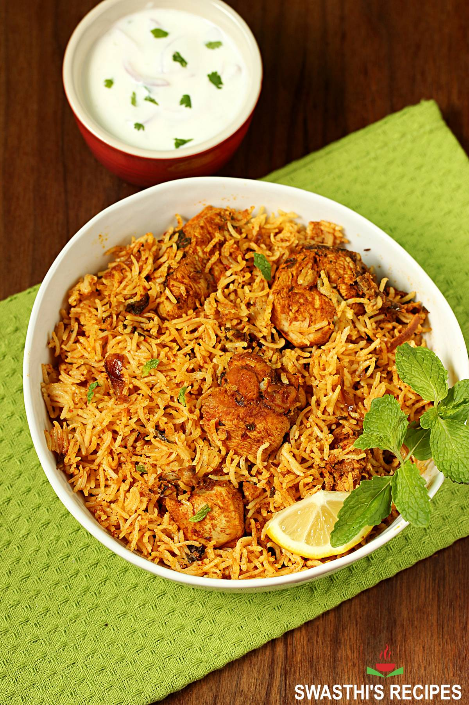

chicken biriyani

About chicken biriyani
The traditional process of Chicken Biryani starts by marinating meat in yogurt along with spices and herbs. The raw/uncooked marinated meat is layered at the bottom of a wide pot followed by another layer of par cooked basmati rice, herbs, saffron infused milk, fried onions and ghee or attar (edible essential oil).
The pot is sealed to trap the steam and is dum cooked on a low heat for the most tender and flavorsome dish.
This is known as Kachi Biryani & I have shared that traditional Hyderabadi biryani here. Cooking this kind of a biryani requires a bit of expertise and understanding the dum pukht method correctly.
Ingredients
Biryani Masala Powder
- 1 to 2 bay leaf
- 1 star anise
- 10 to 12 green cardamoms
- 2 two inch piece cinnamon - 2 grams
- 1 black cardamom
- 1½ teaspoon fennel seeds
- ¼ to ½ teaspoon black pepper
- 8 cloves
- 1 tsp caraway seeds (shahi jeera, sub with cumin)
- Half of 1 mace
- 1/4 teaspoon grated nutmeg
other required materials
- 2 cups of Basmati rice
- 500g chicken, cut into pieces
- 2 cups of water
- 2 tablespoons of cooking oil or ghee
- 1 large onion, thinly sliced
- 2 tomatoes, chopped
- 2 cups of pre-prepared chicken masala
- 1/2 cup of plain yogurt
- 2-3 green chilies, slit
- A handful of fresh coriander and mint leaves
- 1/2 teaspoon of red chili powder (optional)
- Salt to taste
- A pinch of saffron strands soaked in 2 tablespoons of warm milk
steps
- Rinse the rice: Wash the basmati rice in cold water until the water runs clear. Soak the rice in water for about 30 minutes, then drain it.
- Cook the rice: In a large pot, bring 2 cups of water to a boil. Add the drained rice and cook until it's 70-80% done. This usually takes about 7-8 minutes. The rice should be firm when bitten, not fully cooked. Drain the rice and set it aside.
- Prepare the chicken: In a large, heavy-bottomed pan or a biryani pot, heat the oil or ghee over medium heat. Add the sliced onions and sauté until they turn golden brown. Remove half of the fried onions and set them aside for garnishing.
- Add the chicken: Add the chicken pieces to the pan and cook until they turn white on the outside.
- Add the masala: Mix in the pre-prepared chicken masala and cook for a couple of minutes to allow the spices to release their flavors.
- Add tomatoes and yogurt: Add the chopped tomatoes, green chilies, and yogurt to the chicken mixture. Cook until the tomatoes soften and the oil starts to separate from the masala.
- Layer the biryani: Layer the partially cooked rice over the chicken masala in the pot. Sprinkle the red chili powder (if using) and salt over the rice. Also, layer the saffron-soaked milk, fresh coriander, and mint leaves.
- Dum cooking: Cover the pot with a tight-fitting lid, or seal it with dough to ensure no steam escapes. Cook on low heat for about 20-25 minutes. This method is called "dum cooking" and allows the flavors to meld together.
- Serve: Once the biryani is done, gently fluff the rice with a fork, ensuring it's well mixed with the chicken masala. Garnish with the fried onions that were set aside.